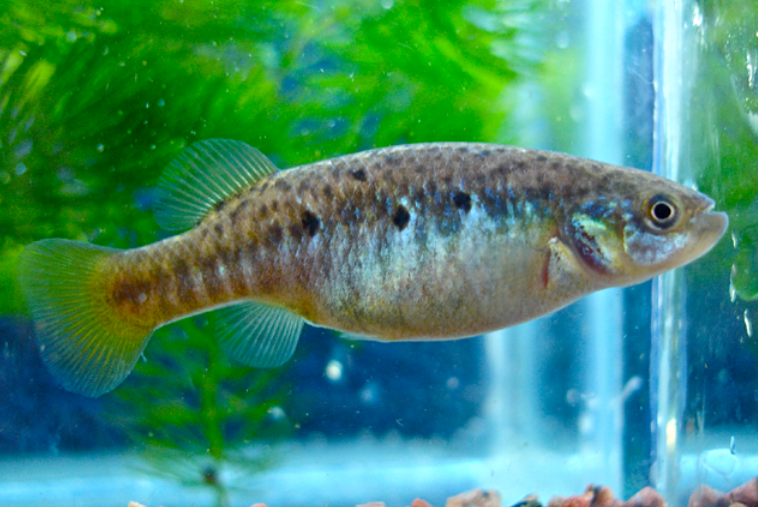

Systématique
- Ordre : Cyprinodontiformes
- Famille : Goodeidae
- Genre : Allotoca
- Espèce : A. goslinei

Allotoca goslinei est une espèce de Goodeidae extrêmement rare, originaire du bassin du Río Ameca au Mexique. Elle appartient à la sous-famille des Goodeinae. Cette espèce est malheureusement considérée comme éteinte à l'état sauvage (EW) par l'UICN depuis les dernières études de terrain, ne subsistant plus qu'à travers des programmes d'élevage conservatoires.
Il s'agit d'une espèce de petite taille, les mâles atteignant environ 3,5 à 4,5 cm, tandis que les femelles sont légèrement plus grandes, pouvant atteindre 5 cm. Le corps est relativement élancé pour un Goodeid. La coloration se compose d'une base grisâtre à olive avec des reflets argentés. Une caractéristique distinctive est la présence d'une série de barres verticales sombres sur les flancs, plus marquées chez les mâles, et d'une tache noire sur la nageoire dorsale des femelles (souvent entourée d'une zone plus claire). Les nageoires des mâles matures peuvent prendre des teintes jaunâtres ou orangées discrètes.
C'est un poisson discret qui occupait principalement les zones calmes des petits ruisseaux et des bassins de sources. Contrairement à d'autres Goodeids plus robustes comme Goodea atripinnis, Allotoca goslinei est une espèce sensible qui ne supporte pas la compétition avec des espèces invasives (comme Pseudoxiphophorus bimaculatus), ce qui a largement contribué à sa disparition.
En captivité, elle montre un comportement calme mais peut se montrer nerveuse si les cachettes sont insuffisantes. Elle apprécie les zones d'eau claire avec peu de courant et une végétation dense. Elle est considérée comme plus difficile à maintenir sur le long terme que la moyenne des Goodeids en raison de sa sensibilité aux changements de paramètres et aux maladies.
Mode : Vivipare (viviparité trophotaéniale). Comme les autres membres de sa sous-famille, le transfert de nutriments entre la mère et l'embryon se fait via des structures appelées trophotaeniae.
La gestation dure environ 55 à 60 jours selon la température. Les portées sont généralement petites, comptant entre 5 et 15 alevins par cycle, ce qui reflète la stratégie de reproduction de l'espèce. Les alevins naissent à une taille relativement grande (environ 10-12 mm) et sont capables de se nourrir immédiatement après la résorption des trophotaeniae. Le cannibalisme envers les jeunes est moins prononcé que chez d'autres espèces, mais reste possible si l'espace est restreint.
Dimorphisme sexuel : Bien visible. Le mâle possède un andropode (nageoire anale modifiée dont les premiers rayons sont courts et séparés par une encoche) utilisé pour la fécondation interne. Le mâle est plus petit, plus svelte et présente des barres verticales plus contrastées. La femelle est plus ronde, plus grande et possède la tache caractéristique sur la nageoire dorsale.
Espérance de vie : Environ 3 à 5 ans en captivité sous des conditions de maintenance rigoureuses.
L'habitat historique d'Allotoca goslinei se limitait à un très petit affluent du Río Ameca, spécifiquement le Potrero Grande au Jalisco, Mexique. Il fréquentait des eaux peu profondes, claires à légèrement troubles, avec un courant faible. Le fond était composé de boue, de sable et de roches, souvent recouvert de racines et de débris végétaux.
La température de l'eau dans son habitat d'origine oscillait généralement entre 18°C et 24°C, restant relativement fraîche par rapport aux plaines environnantes. La disparition de son biotope due à la pollution, au pompage de l'eau et à l'introduction d'espèces exotiques prédatrices a conduit à l'extinction de l'espèce dans la nature.
Répartition

Origine naturelle :
- Mexique : État de Jalisco.
- Bassin versant : Río Ameca.
- Localité : Arroyo Potrero Grande (localité type).
Statut : Éteint à l'état sauvage (EW). Les seules populations existantes sont maintenues par des aquariophiles spécialisés et des institutions comme l'Université de Morelia (MUMS).
Paramètres de maintenance
Température : 18 à 22 °C (idéal), tolère jusqu'à 24 °C. Éviter les chaleurs prolongées.
pH : 7,0 à 8,0.
GH : 10 à 20 °dGH (eau moyennement dure à dure).
Courant : Faible à modéré.
Volume conseillé : 60 à 80 L minimum pour un petit groupe de conservation. Bac spécifique fortement recommandé.
Régime alimentaire
Régime : Omnivore à tendance carnivore (insectivore).
Le GWG rapporte que l'espèce se nourrit principalement de petits invertébrés aquatiques et de larves d'insectes. En aquarium, elle accepte les nourritures sèches de qualité, mais nécessite un apport régulier de proies vivantes ou congelées (daphnies, cyclops, artémias) pour maintenir sa santé et sa fertilité.